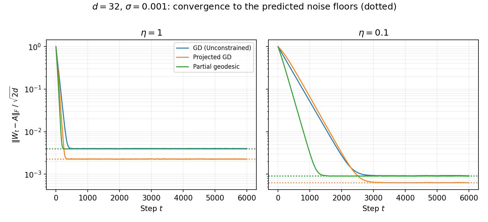

Learning Rotations from Noisy Observations
What changes in Learning Rotations Online when every observation arrives with additive Gaussian noise — and how each of the three updates is modified to cope.
Same setting as the main report — an unknown rotation \(A \in SO(d)\), pairs \((x, y)\) with \(x\) uniform on the unit sphere, one pair per step — except now
$$y = Ax + \varepsilon, \qquad \varepsilon \sim \mathcal{N}(0, \sigma^2 I).$$What breaks
All three updates were built to enforce their constraint exactly, but with noise the constraints are no longer consistent: no fixed \(W\) satisfies them all. Each step therefore interpolates that step's noise, and instead of converging the iterates random-walk around \(A\) at a noise floor. The unmodified methods stall at \(\mathbb{E}\Vert W - A \Vert_F^2 = \sigma^2 d^2\) (GD), \(\sigma^2 d(d-1)/3\) (projected GD), and \(\sigma^2 d(d-1)\) (geodesic). They do not diverge — they stop improving once the error is the size of one noise kick.
The modification: one knob, three forms
The cure is the same everywhere — a step size \(\eta \in (0, 1]\) that takes a partial step toward the noisy constraint — but it enters each method in its own geometry:
1 · Gradient descent → relaxed Kaczmarz (plain SGD)
No other change is needed, because the noise is unbiased: \(A\) is still the exact minimizer of the population loss \(\mathbb{E}\Vert Wx - y \Vert^2\) (since \(\mathbb{E}[yx^\top] = A/d\)). Damping alone restores consistency.
floor \(\eta\sigma^2 d^2/(2-\eta)\)2 · Projected GD → polar of the relaxed step
Relax the additive step, then snap back to \(SO(d)\) as before. The projection discards the symmetric half of every noise kick — only the skew part survives.
floor \(\eta\sigma^2 d(d-1)/(4-\eta)\)3 · Native → partial geodesic (Riemannian SGD)
Normalize the target, \(\hat y = y/\Vert y \Vert\), and rotate in the plane \(\mathrm{span}\{Wx, \hat y\}\) through the fraction \(\eta\) of the angle: \(K = \hat y u^\top - u \hat y^\top\), \(u = Wx\), \(\varphi = \arccos(u \cdot \hat y)\) — the trigonometric Rodrigues form from the main report with a scaled angle (\(\eta = 1\) recovers the original). The normalization is the right move anyway: a rotation only needs a direction, and dividing by \(\Vert y \Vert\) silently discards the radial component of the noise.
floor \(\eta\sigma^2 d(d-1)/(2-\eta)\)The accounting
Writing the per-step behavior of \(\mathbb{E}\Vert W - A \Vert_F^2\) as contraction times error plus injected noise:
| Update | Contraction per step | Noise injected | Stationary floor |
|---|---|---|---|
| GD | \(1 - (2\eta - \eta^2)/d\) | \(\eta^2\sigma^2 d\) | \(\eta\sigma^2 d^2/(2-\eta)\) |
| GD + projection | \(1 - (2\eta - \eta^2/2)/d\) | \(\eta^2\sigma^2 (d-1)/2\) | \(\eta\sigma^2 d(d-1)/(4-\eta)\) |
| Partial geodesic | \(1 - (4\eta - 2\eta^2)/d\) | \(2\eta^2\sigma^2 (d-1)\) | \(\eta\sigma^2 d(d-1)/(2-\eta)\) |

Three things worth absorbing
The manifold rejects half the noise. GD absorbs the full kick \(\eta\,\varepsilon x^\top\); the projection and the geodesic step keep only its skew (tangential) part. At stationarity there is an equipartition: each free coordinate holds \(\eta\sigma^2/2\) of squared error — and GD has \(d^2\) coordinates while the manifold methods have only \(\dim SO(d) = d(d-1)/2\). Constraining to the manifold halves the floor because it halves the dimensions the noise can live in.
The noiseless 1.5 : 2 advantage dissolves. At equal \(\eta\) the geodesic step contracts twice as fast as projected GD but swallows four times the noise; at matched convergence rate (\(\eta_{\text{geo}} = \eta_{\text{pgd}}/2\)) their floors coincide exactly — measured 2.538e-5 versus 2.538e-5 at \(d = 32\). This is the half-angle fact from the main report coming home: projected GD is the partial geodesic with \(\eta/2\), to first order, so under noise there is really one manifold method with a step-size knob. The noiseless prescription "take the full step" is simply no longer optimal.
At matched rate: projected GD \(\equiv\) partial geodesic,
and both sit at half the floor of unconstrained GD.
Constant \(\eta\) trades speed for floor linearly. Floor \(\propto \eta\), time-to-floor \(\propto d/\eta\). To converge all the way, decay the step: the Robbins–Monro schedule \(\eta_t = c/(t + t_0)\) (with \(c\) of order \(d\)) gives \(\mathbb{E}\Vert W - A\Vert_F^2 = O(\sigma^2 d^3/t)\), matching the information-theoretic scaling for estimating \(d(d-1)/2\) rotation parameters from \(t\) noisy \(d\)-dimensional observations; Polyak-style (geodesic) averaging recovers the optimal constant without delicate tuning. A practical alternative: run at constant \(\eta\) until the error plateaus, halve \(\eta\), repeat.
One asymmetry survives everything: GD's contraction identity is exact at any distance while the manifold rates are asymptotic — but only the manifold methods return an actual rotation at every step, and under noise they buy their factor-of-two floor advantage for free.
Implementation
The simulation is noise_floors.py — the partial geodesic is the scaled-angle Rodrigues formula applied as a rank-2 correction, and the script prints measured-versus-predicted floors for all six \((\text{method}, \eta)\) configurations (agreement within 0.5%, and within 0.2% in longer runs).
python noise_floors.py # simulate, check floors, regenerate the figure